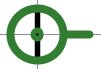

AdaLogoHome
Was ist AdaLogo?

AdaLogo wurde im Rahmen eines Software-Praktikums im Sommersemester 2005
an der Uni Stuttgart erstellt. Ziel der Software ist es den
Studienanfängern ohne oder mit wenigen Programmiervorkenntnissen
die erste Programmiersprache Ada nahe zu bringen. Dabei verwendeten wir
das Prinzip "Logo". Anhand von wenigen Befehlen ist es bereits
möglich, einer Schildkröte das Laufen beizubringen.
Spielend lernt man dabei die Syntax von Ada. Auf der
Vorlesungsseite
Informatik I (Automatisierungstechnik in der Produktion)
WS 05/06,
WS 06/07
finden Sie Beispiele und Beispiel-Aufgaben in AdaLogo.
Los geht's!
 AdaLogo kann direkt vom Browser als Applet gestartet
werden (ca.
224KB).
Sie benötigen Java (ab Version 1.4).
Stimmen Sie bitte dem Zertifikat zu, damit Sie mit dem Applet Dateien
speichern und laden können. Falls der Link zum AdaLogo starten nicht
funktioniert, so benutzen Sie die unten genannte Alternative ohne Javascript.
Alternativen zum Applet sind:
AdaLogo kann direkt vom Browser als Applet gestartet
werden (ca.
224KB).
Sie benötigen Java (ab Version 1.4).
Stimmen Sie bitte dem Zertifikat zu, damit Sie mit dem Applet Dateien
speichern und laden können. Falls der Link zum AdaLogo starten nicht
funktioniert, so benutzen Sie die unten genannte Alternative ohne Javascript.
Alternativen zum Applet sind:
-
Download adalogo.jar (ca.
224KB) für
den Offline-Betrieb.
Falls Java bei Ihnen
installiert ist, führen Sie folgenden Befehl nach dem Download aus:
java -jar adalogo.jar . Bei Windows-Benutzer genügt es offensichtlich
ein Doppelklick auf die heruntergeladene Datei, falls Sie Java installiert haben.
-
Webstart mit AdaLogo
-
AdaLogo starten ohne Javascript.
Und wie geht das?
 Ist ja alles schön und gut. Aber wie funktioniert
die Sprache AdaLogo, die an die Ada-Syntax angelehnt ist?
Unter Reference wird alles erklärt.
Ist ja alles schön und gut. Aber wie funktioniert
die Sprache AdaLogo, die an die Ada-Syntax angelehnt ist?
Unter Reference wird alles erklärt.
Hier ist außerdem die Beschreibung des Programmes.
Die Fehlermeldungen in der Konsole sind interessant, mit den Fehlermeldungen kann man sich auf die Suche nach
Fehler im Programm begeben. Um zu verfolgen, welche Variabel welchen Wert hat und wie die Schildkröte
arbeitet, empfiehlt es sich das eigene
Programm mit "debug"/"single step" auszuführen.
Screenshot, Quelltext und Dokumentation?
Bekommen Sie unter Download.
Wer sind wir?
Unter AdaLogoTeam erfahren Sie
wer wir sind. Dort sind auch Kontaktdaten hinterlegt, damit Sie mit
uns in Verbindung treten können. Wir freuen uns auf Ihr
Feedback.